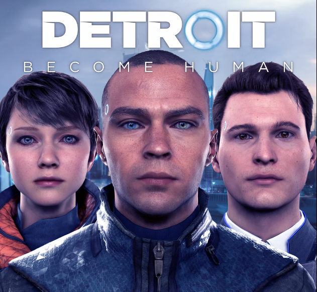
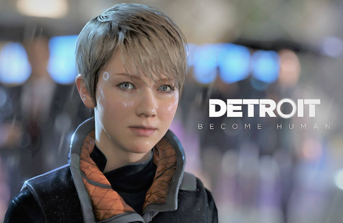
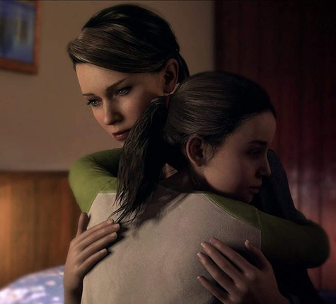

|  | Detroit: Become Human é um jogo eletrônico produzido pela Quantic Dream e publicado pela Sony Interactive Entertainment para o PlayStation 4 e Microsoft Windows PC. A história gira em torno de Kara, Markus e Connor, três androides concebidos pela empresa fictícia CyberLife que,consoante as decisões que o tomar, mudarão o rumo da cidade de Detroit e, consequentemente, dos Estados Unidos da América.Além disso, será testemunhado o surgimento de uma nova raça: Os Divergentes (androides que manifestam emoções humanas). Voltar.. |
|  | Detroit:Become Human é baseado na demonstração tecnológica de 2012 da Quantic Dream Kara, que também estrelou Curry.Para pesquisar o cenário, os desenvolvedores visitaram Detroit, Michigan. O roteiro levou mais de dois anos para ser concluído pelo escritor e diretor David Cage. Eles construíram um novo mecanismo para complementar o jogo e escalar centenas de atores antes de iniciar o processo de filmagem e animação.Philip Sheppard, Nima Fakhrara e John Paesano serviram como compositores para Kara, Connor e Markus, respectivamente. Foi lançado para o PlayStation 4 em maio de 2018 e o Microsoft Windows em dezembro de 2019. Voltar.. |
|  | Detroit: Become Human recebeu críticas geralmente favoráveis dos críticos, que elogiaram o cenário, os visuais, os momentos menores da história, os personagens principais, seus dubladores, as escolhas de impacto que tiveram na narrativa e o recurso do fluxograma, mas criticaram os controles de movimento,manuseio incorreto de alegorias históricas e temáticas e aspectos do enredo e personagens.O jogo é o lançamento de maior sucesso da Quantic Dream, com vendas superiores a 3 milhões. Voltar.. |